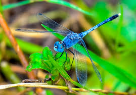
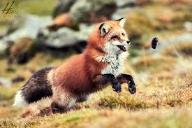
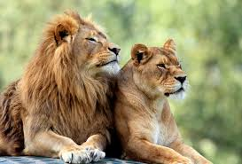
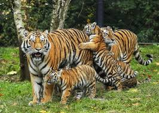
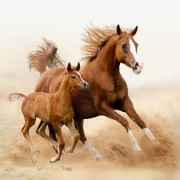

Dragonfly

Draco Volant is the latin word for dragonfly
- Dragonflies are predators, both in their aquatic larval stage, when they are known as
naiads, and as adults. Several years of their lives are spent as living in fresh water.
A dragonfly is an insect belonging to the order anisoptera. Dragonflies can be mistaken
for the related group which are similar in structures, though usually lighter in build.
Dog
Catulum is the latin word for dog
- The domestic dog is a member of the genus which forms part of the wolf-like canids, and
is the most widely abundant terrestrial carnivore. The dog was the first species to be
domesticated and has been selectively bred over millennia for various behaviors,
sensory capabilities, and physical attributes. Their long association with humans has
led dogs to be uniquely attuned to human behavior, and they are able to thrive on a
starch-rich diet that would be inadequate for other canid species.
Cow

Vitula Eligans is the latin word for cow
- Domestic cows are one of the most common farm animals around the world, and has
several words to describe these animals at various ages. A baby cow is called a
calf. A female calf is sometimes called a heifer calf and a male a bull calf.
An adult male is known as a bull. Many male cattle are castrated to reduce their
aggressive tendercies and make them more tractable. In common parlance, a domestic
bovine, regardless of sex and age, usually of the species Bos taurus. In precise
usage, the name is given to mature females of several large mammals.
Fox

Vulpes is the latin word for fox
- Twelve species belong to the monophyletic species are always or sometimes called
foxes, these foxes are either part of the paraphyletic group of the South American
foxes, or of the outlying group, which consists of bateared fox, gray fox, and island
fox. The hunting of foxes with packs of hounds, long an established pursuit in europe,
especially in the British Isles.
Cat
Cattus is the latin word for cat
- Cats have a high breeding rate. Under the controled breeding, they can be bred and
shown as registered pedigree pets, a hobby known as cat fancy. Failure to control the
breeding of pet cats by spaying and neutering, as well as the abandonment of former
household pets, has resulted in large numbers of feral cats worldwide, requiring
population control.
Eagle
Aquila is the latin word for eagle
- Eagle is the common name for many large birds of prey of the family Accipitridae.
Eagles belong to several groups of genera, not all of which are closely related. Most
of the 60 species of eagle are from Eurasia and Africa. Eagles are large, powerfully
built birds of prey, with heavy heads and beaks. Even the smallest eagles, such as
the booted eagle, which is comparable in size to a common buzzard.
Lion

Leo is the latin word for lion
- The lion Panthera leo is a species in the family, it is a muscular deep-chested cat
with a short, rounded head, a reduced neck and round ears, and a hairy tuft at the end
of its tail. The lion is sexually dimorphic, males are larger than females with a
typical weight range of 150 to 250 kg. Male lions have a prominent mane, which is the
most recognisable feature of the species. Groups of female lions typically hunt together,
preying mostly on large ungulates.
Tiger

Tigris is the latin word for tiger
- The tiger Panthera tigris is the largest cat species, most recognizable for its pattern
of dark vertical stripes on reddish-orange fur with a lighter underside. The species is
classified in the genus panthera with the lion,jaguar,leopard, and sonw leopard. It is an
apex predator,primarily preying on ungulates such as deer and bovids.
Horse

Equus is the latin word for horse
- Horse breeds are loosely divided into three categories based on general temperament
spirited hot bloods with speed and endurance, cold bloods such as draft horses and
some ponies, suitable for slow, heavy work, and warmbloods. It developed from crosses
between hot bloods and cold bloods, often focusing on creating breeds for specefic
riding purposes, particularly in Europe. There are more than 300 breeds of horse in
the world today, developed for many different uses.